Who Am I
Becoming?
My Art Appreciation
Journey
Part I
Choose an activity to explore its details and supporting work.
Made by Hand
Part IIChoose a piece to see its details and the process behind it.
Looking Forward
ReflectionWhat I learned about art, and what it taught me about myself.
Stepping outside the structured logic of software development and routine technical problem-solving required a shift in perspective. Art appreciation provided a space where exact solutions do not always take precedence, allowing room for trial, observation, and intentional design.
Working with unfamiliar physical mediums—handling clay, timing lighting for photography, and structuring non-digital art—highlighted the friction between idea and execution. Unlike writing code, physical materials carry unpredictability. Learning to adapt to material constraints shifted my view of mistakes from errors to refine, into meaningful details to integrate into the overall piece.
Through this portfolio, the journey of creation served as a lens for self-discovery. Moving forward, I see myself growing into an analytical yet expressive practitioner—someone who values structure, efficiency, and logic while maintaining an appreciation for form, human experience, and creative intent.
Behind the Work
AppendicesChoose a piece to open its supporting document and proof of creation.
Consent Form
Institutional ReleaseScribble
01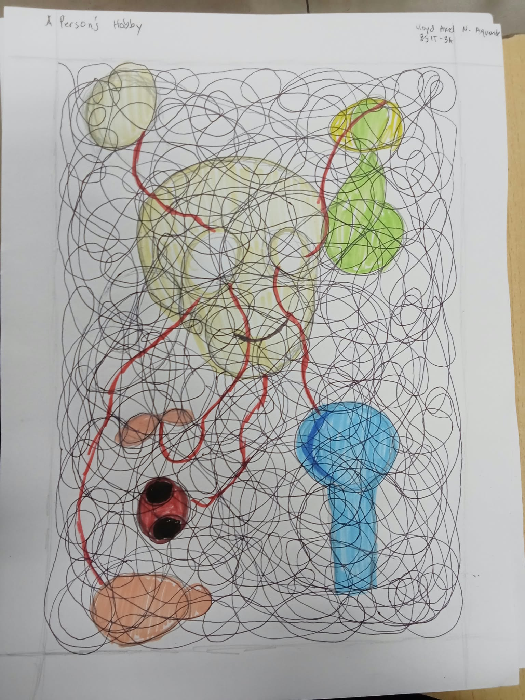
"A Person's Hobby" began as one continuous, looping scribble covering the whole page. I then looked for shapes hiding inside the tangle, colored them in, and connected them with red lines running through the chaos.
I learned that structure can come after the mess. Starting without a plan took pressure off, and finding forms inside the lines showed me how much of art is simply noticing. The red lines also taught me how separate parts of one subject can still be connected.
Book Spine Poem
02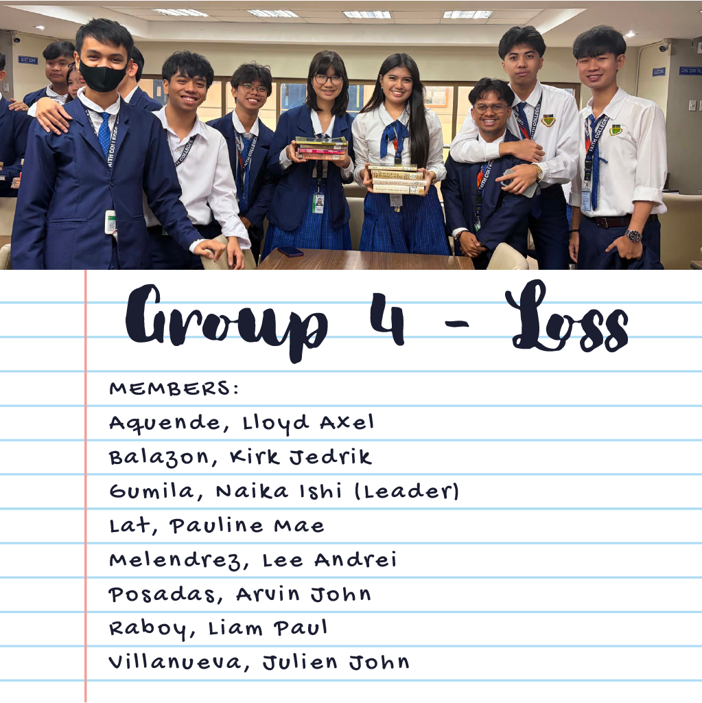
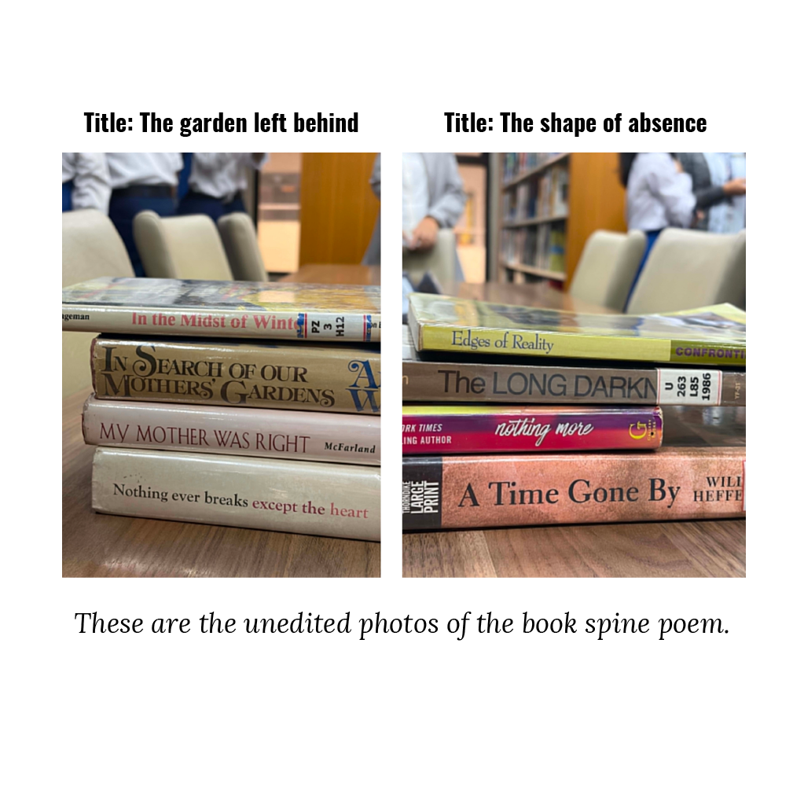
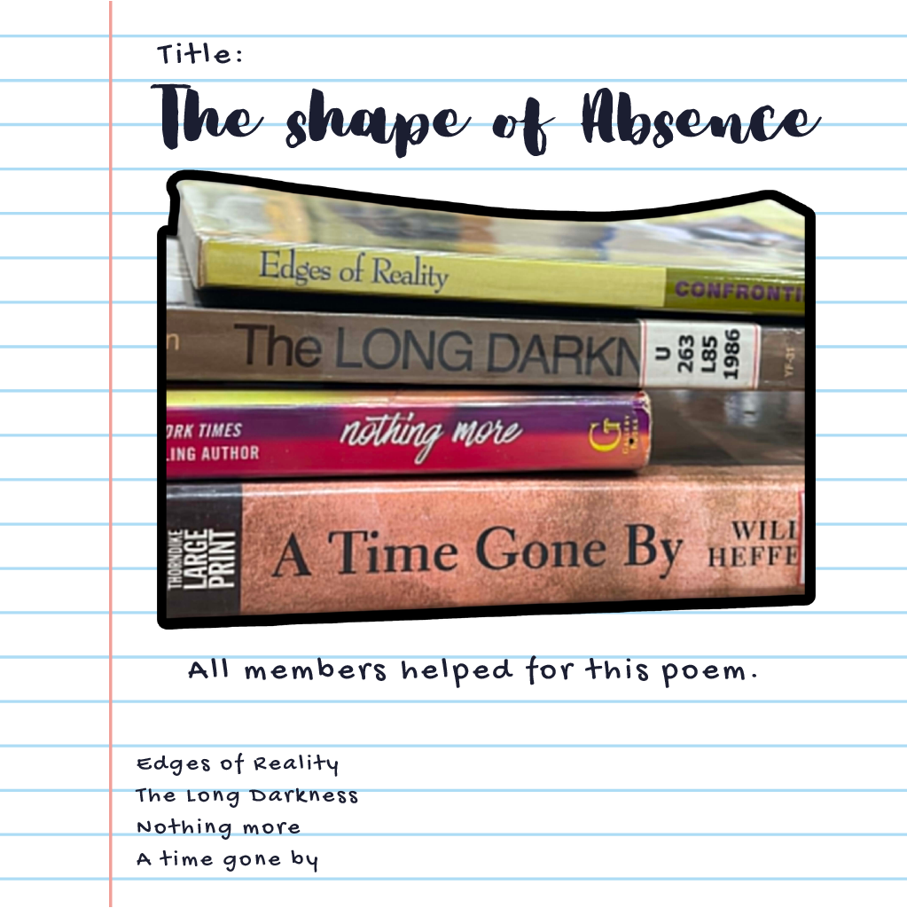
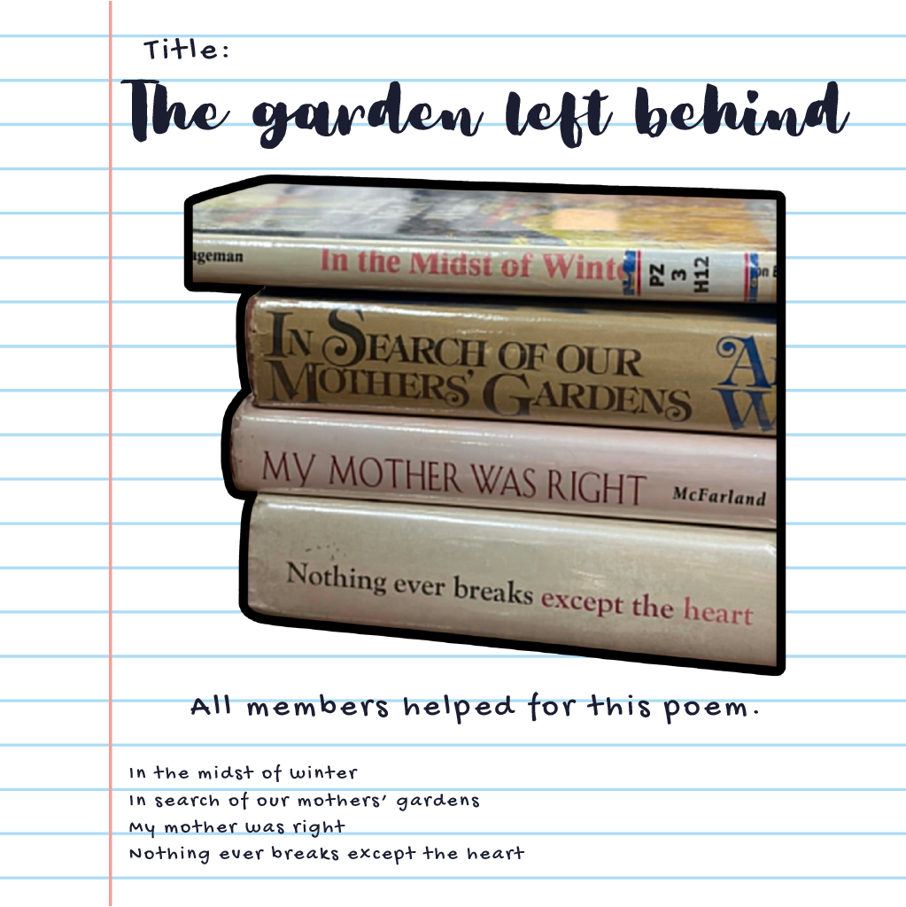
With Group 4, under the theme of Loss, we picked books from the library and stacked them so the titles on their spines read as a poem. We made two: "The Shape of Absence" and "The Garden Left Behind." All members helped with both.
Members: Aquende, Lloyd Axel · Balazon, Kirk Jedrik · Gumila, Naika Ishi (Leader) · Lat, Pauline Mae · Melendrez, Lee Andrei · Posadas, Arvin John · Raboy, Liam Paul · Villanueva, Julien John
I learned that meaning can be found in things that already exist. We didn't write a single word, yet the order of the titles carried a feeling of loss. It also showed me how teamwork shapes a piece: every member's choice changed what the poem became.
The Shape of Absence
Edges of Reality
The Long Darkness
Nothing more
A time gone by
The Garden Left Behind
In the midst of winter
In search of our mothers' gardens
My mother was right
Nothing ever breaks except the heart
Coffee Painting
03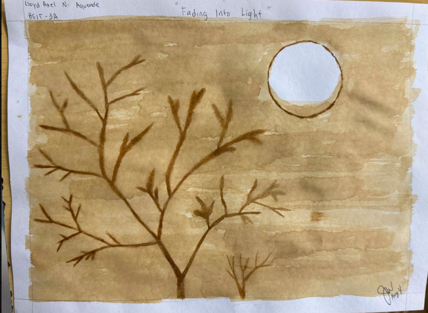
"Fading Into Light" is a painting made with coffee as the only pigment. Layered washes make up the warm background, a bare tree is painted in darker strokes, and the moon is left as untouched white paper.
I learned that art can be made from ordinary materials. Coffee has to be built up in layers to control how light or dark it gets, and I couldn't fully control how it spread. Leaving the moon unpainted also showed me how empty space can be the brightest part of a piece.
Blackout Poetry
04I made this blackout poem from a newspaper article about a basketball player's final game. I circled a handful of words and inked and hatched everything else in dark and copper tones, so the remaining words read as a short poem about a farewell.
I learned that choosing what to remove matters as much as choosing what to keep. The same article became a different story once most of it was hidden. My teacher's note, "you could've ended here," also taught me about restraint and knowing when a piece already says enough.
AI Recreation
05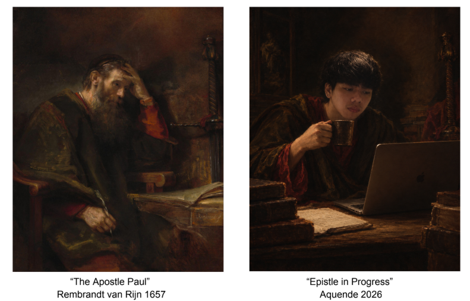
"Epistle in Progress" reimagines Rembrandt's "The Apostle Paul" (1657). The writer at his desk becomes a student with a mug and a laptop, surrounded by stacked books, while the composition, dark warm palette, and dramatic lighting stay faithful to the original.
I learned how classical principles such as composition, chiaroscuro, and a focused light source still work in a modern setting. Placing the two works side by side helped me see how the idea of "someone writing at work" carries across centuries. It also showed me that guiding AI well depends on already understanding what makes the original work.
Painting
06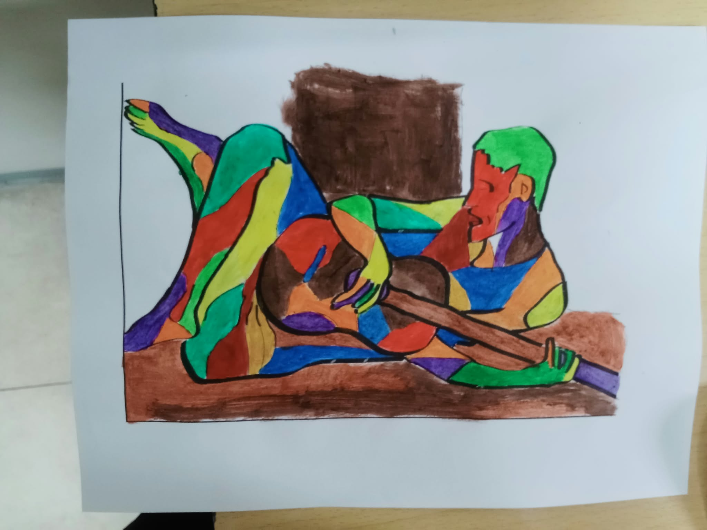
A reclining figure playing a guitar, broken into flat planes of saturated color and held together with thick black outlines. Warm browns for the floor, wall, and guitar keep the bright shapes grounded.
I learned how a figure can be taken apart into shapes and still be recognizable. The black outlines kept the colors from clashing, and the browns gave the bright planes somewhere to rest. Working this way pushed me to see form and color as separate decisions.
Multimedia
07A short video filmed inside a chapel. It moves between wooden sculptures, carved relief panels, stained-glass windows, and a figure standing and praying before the cross, using low angles and natural light.
I learned that video tells a story through framing, angles, and pacing, not just through what is in front of the camera. Cutting between close details and wide shots helped me show both the artwork and the quiet atmosphere around it. It also taught me to plan shots around the available light.
Additional Video
08This video is my analysis of the film Sunshine (2024), starring Maris Racal as a young gymnast whose Olympic dreams are disrupted by an unexpected turn in her life. Following the Observe, Analyze, Contextualize, Interpret, and Judge framework, I look closely at key scenes, including those set in Quiapo. I examine how the cinematography, setting, performances, and use of sound express the character's pressure, struggle, and resilience. I then place the film in its social context and give my own judgment of its message and impact.
I learned that watching a film critically means looking beyond the story to how it is told. Observing first and interpreting later helped me notice details such as framing, location, body language, and silence, and how each carries meaning. Studying Maris Racal's performance showed me how much emotion an actor can convey through small gestures and expressions. The Quiapo scenes taught me that a setting can reflect a character's inner state and social reality. Analyzing the film also deepened my understanding of the pressures young people face when their dreams and their circumstances collide, and it helped me form and defend my own judgment with evidence from the film.
Sketch
01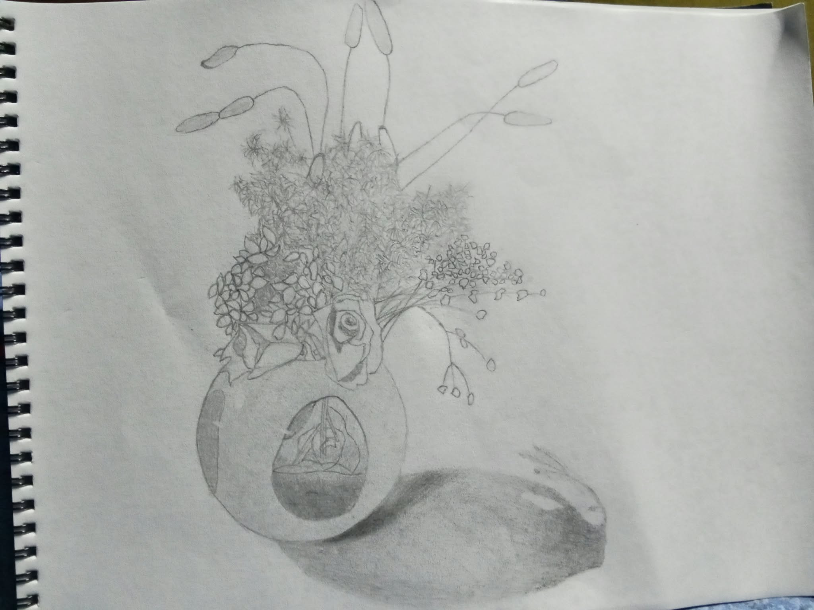
This pencil sketch illustrates a vase filled with different flowers and leaves. It uses simple lines, shapes, and shading to create depth and represent the beauty of nature.
Creating this sketch taught me the importance of observation and the use of negative space to enhance the composition.
Photography
02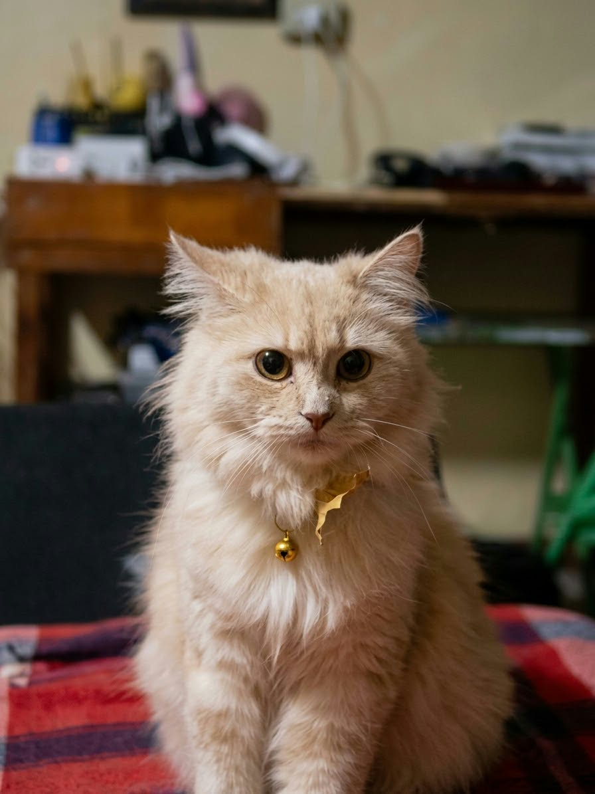
This photograph captures a fluffy cat sitting and looking directly at the camera. The lighting and background help emphasize the cat's facial features and beautiful fur.
I learned about composition, lighting, and the importance of capturing genuine moments in photography.
Digital Art
03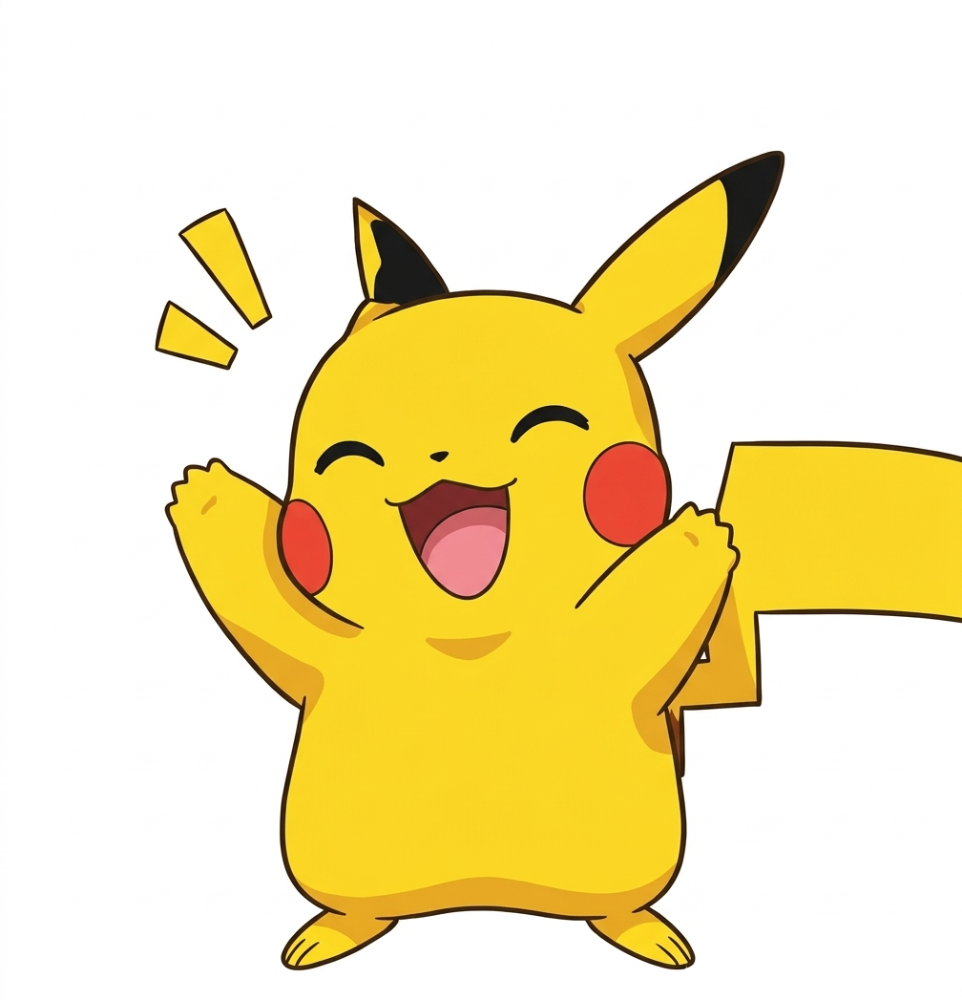
This digital artwork features Pikachu, created using a digital drawing tablet and stylus. I used colors, shapes, and outlines to bring the character to life.
I learned how to use digital drawing tools, experiment with colors, and improve my control when creating illustrations. I also discovered how digital art makes editing and enhancing artwork easier.
Sketch
I.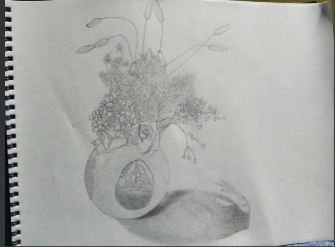
A photo of my hand-drawn graphite sketch in a spiral sketchbook. It shows flowers arranged in a round vase, with a cast shadow beside it.
I drew the main shapes first, then built up the details of the flowers and the vase. I finished with shading to give the vase volume and the shadow depth.
Photography
II.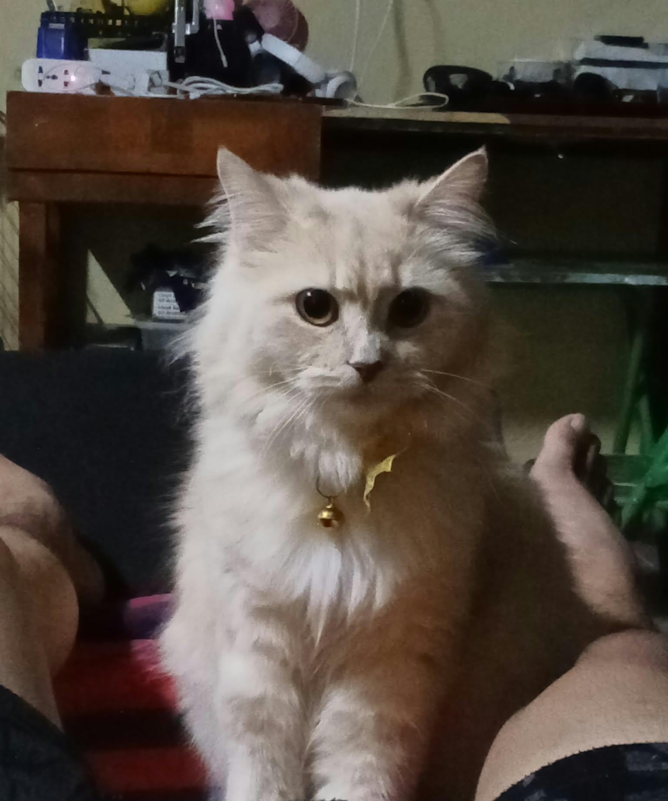
The original photograph I took: a fluffy cream-colored cat with a small bell on its collar, looking straight into the camera in an indoor setting.
I framed the cat at eye level so its gaze is the focus of the shot. I took the photo in the available indoor light, without a studio setup.
Digital Art
III.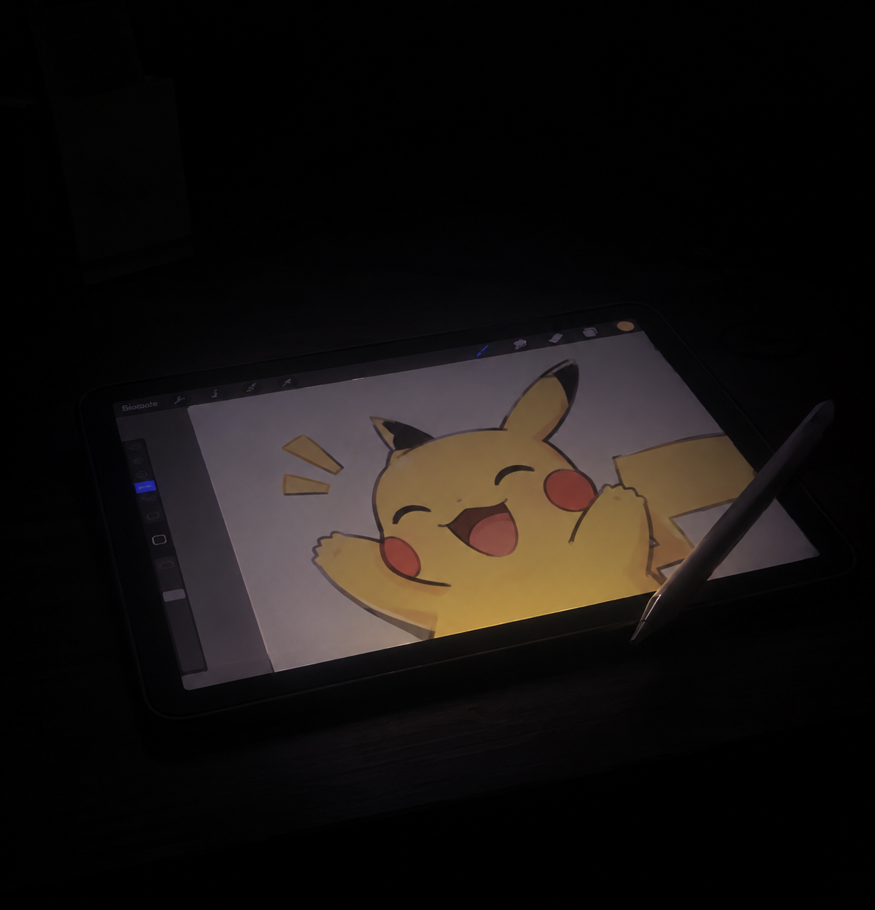
A photo of my tablet and stylus while I was working on the digital drawing. The drawing app's tools are visible on the screen next to the artwork in progress.
I drew the outlines first, then filled in the colors and details with the stylus. Working in a drawing app let me adjust and correct my lines as I went.